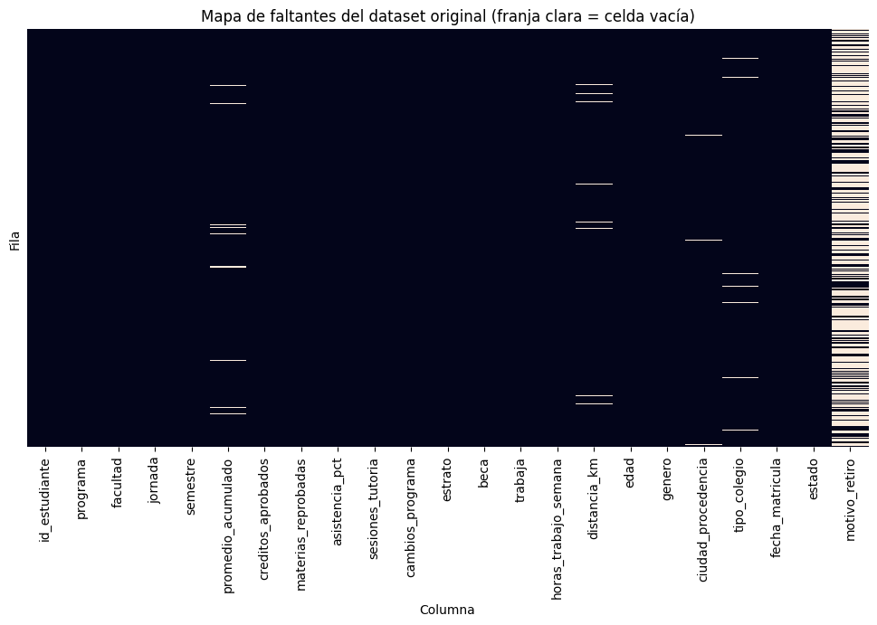
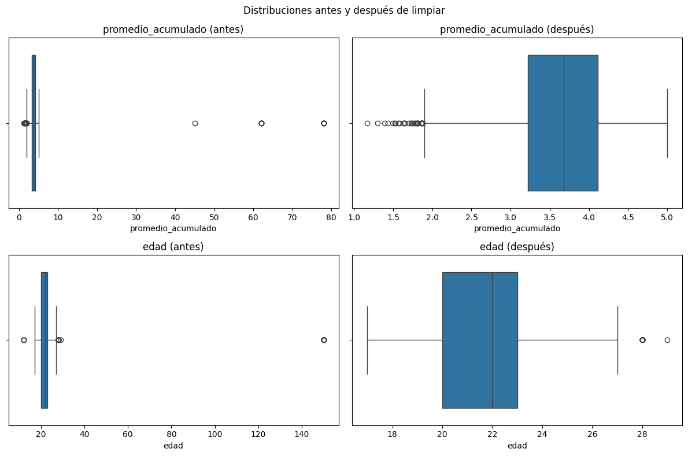
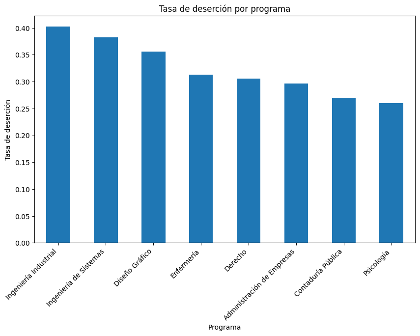
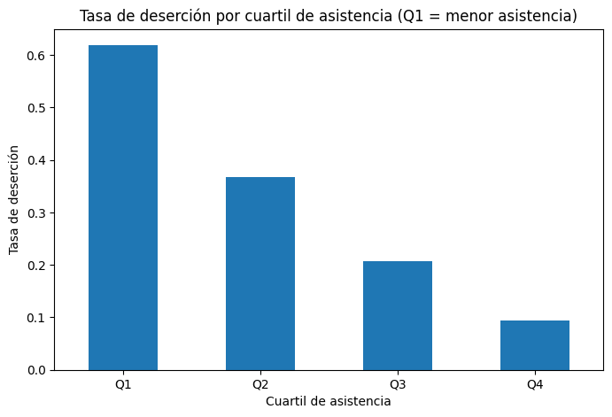

Todas las cifras de esta sección salen de ejecutar analisis_desercion.py sobre Data/raw/datos_estudiantes.csv (10.150 filas y 23 columnas). Después de la limpieza quedan 9.687 estudiantes: 5.692 activos, 3.136 desertores y 859 graduados. En todas las tasas, "deserción" significa desertores sobre el total del grupo, incluidos activos y graduados.
0. Diccionario de datos
| Columna | Tipo | Descripción | Rol |
|---|---|---|---|
| id_estudiante | texto | Código único de cada estudiante (por ejemplo, EST01214). | identificación |
| programa | categórica | Programa académico en el que está matriculado (8 programas). | explicativa |
| facultad | categórica | Facultad a la que pertenece el programa (5 facultades). Repite información de programa. | explicativa |
| jornada | categórica | Horario de estudio: Diurna, Nocturna o Fin de semana. | explicativa |
| semestre | numérica | Semestre que cursa el estudiante (de 1 a 10). | explicativa |
| promedio_acumulado | numérica | Nota promedio acumulada, en escala de 0 a 5. | explicativa |
| creditos_aprobados | numérica | Créditos académicos aprobados hasta el momento (de 0 a 52). | explicativa |
| materias_reprobadas | numérica | Cantidad de materias perdidas (de 0 a 13). | explicativa |
| asistencia_pct | numérica | Porcentaje de asistencia a clases. Llega como texto: algunas celdas traen "%" y otras "-". | explicativa |
| sesiones_tutoria | numérica | Número de sesiones de tutoría que ha tenido (de 0 a 7). | explicativa |
| cambios_programa | numérica | Veces que cambió de programa. En los datos solo toma los valores 0 y 1. | explicativa |
| estrato | categórica | Estrato socioeconómico (de 1 a 6). Es una categoría ordenada, no una cantidad que se promedie. | explicativa |
| beca | categórica | Indica si el estudiante recibe beca (sí o no). | explicativa |
| trabaja | categórica | Indica si el estudiante trabaja mientras estudia (sí o no). | explicativa |
| horas_trabajo_semana | numérica | Horas de trabajo por semana. Llega como texto, con "-" en quienes no trabajan, y trae valores imposibles (200). | explicativa |
| distancia_km | numérica | Distancia en kilómetros entre el estudiante y la institución. El valor 999 significa "sin dato". | explicativa |
| edad | numérica | Edad en años. Trae valores imposibles (12 y 150). | explicativa |
| genero | categórica | Femenino o Masculino. Llega con abreviaturas (M, F). | explicativa |
| ciudad_procedencia | categórica | Ciudad de la que viene el estudiante. | explicativa |
| tipo_colegio | categórica | Tipo de colegio de origen: Público o Privado. | explicativa |
| fecha_matricula | fecha | Fecha en que se matriculó. Llega en dos formatos distintos. | explicativa |
| estado | categórica | Situación del estudiante: activo, graduado o desertor. | resultado |
| motivo_retiro | categórica | Razón por la que el estudiante se retiró. Solo existe para los desertores. | resultado |
Las descripciones las deduje del nombre de cada columna y de sus valores, porque la guía no trae definiciones oficiales.
Al revisar el archivo encontré que cuatro columnas numéricas no se comportan como tales: asistencia_pct y horas_trabajo_semana llegan como texto, distancia_km mezcla distancias con un código (999), y promedio_acumulado tiene valores de 45, 62 y 78 en una escala que llega a 5. Además, fecha_matricula mezcla dos formatos.
1. Diagnóstico de calidad
Antes de corregir nada, audité el archivo original con isnull(), comparaciones con ==, str.contains() y duplicated(). Revisé cada columna por separado porque cada tipo de problema se trata distinto: un nulo real no se resuelve igual que un faltante disfrazado. Esto fue lo que encontré.
| Tipo de problema | Columna | Cuántos |
|---|---|---|
| Nulo real | promedio_acumulado | 304 |
| Nulo real | distancia_km | 199 |
| Nulo real | tipo_colegio | 152 |
| Nulo real | ciudad_procedencia | 103 |
| Nulo esperado (no es error) | motivo_retiro | 6.877 (todos activos y graduados) |
| Faltante disfrazado (guion "-") | horas_trabajo_semana | 2.822 |
| Faltante disfrazado (guion "-") | asistencia_pct | 202 |
| Faltante disfrazado (999) | distancia_km | 152 |
| Formato inconsistente (símbolo "%") | asistencia_pct | 300 |
| Formato inconsistente (fechas) | fecha_matricula | 3.052 en DD/MM/AAAA y 7.098 en AAAA-MM-DD |
| Error tipográfico | programa | 10 escrituras para 8 programas |
| Error tipográfico | jornada | 6 escrituras para 3 jornadas |
| Error tipográfico | genero | 5 escrituras para 2 valores |
| Error tipográfico | ciudad_procedencia | 12 escrituras para 7 ciudades |
| Valor imposible | promedio_acumulado | 17 filas con valores de 45, 62 y 78 (escala de 0 a 5) |
| Valor imposible | edad | 12 filas (4 de 12 años y 8 de 150 años) |
| Valor imposible | horas_trabajo_semana | 30 filas con 200 horas |
| Duplicado | todas | 150 filas idénticas (también repetían id_estudiante) |
Tres observaciones que cambian cómo se lee la tabla:
- El nulo de
motivo_retirono es un error. Está vacío en los 5.977 activos y en los 900 graduados, y lleno en los 3.273 desertores. Es un "no aplica". - Los guiones de
horas_trabajo_semanatampoco son faltantes. Los 2.822 guiones pertenecen a estudiantes contrabaja = "no", y ningún estudiante que trabaja tiene guion. Significan "no trabaja", es decir, cero horas. - El mapa de faltantes no ve todo. En el gráfico 1 (
mapa_faltantes.png) los huecos más visibles sonmotivo_retiro(68 % de celdas vacías) y, mucho más finos,promedio_acumulado(3 %),distancia_km(2 %),tipo_colegio(1,5 %) yciudad_procedencia(1 %). Coinciden con los nulos que conté en el paso 2. Peroasistencia_pctyhoras_trabajo_semanase ven completas, aunque tienen 202 y 2.822 guiones, porqueisnull()no detecta los faltantes disfrazados. Por eso hace falta auditar con==y no confiar solo en el mapa.
¿Cuál problema afecta más el análisis? Para mí, los valores imposibles de promedio_acumulado. No producen ningún error: el código corre y entrega un número. Con ellos el promedio de la institución daba 3,76 y una desviación de 2,72. Sin ellos da 3,65 y una desviación de 0,64. La desviación cuatro veces mayor era una señal de que algo estaba mal, y cualquier comparación entre grupos con esa columna habría quedado distorsionada. Los duplicados (150 filas, 1,5 %) distorsionan menos, y los problemas de formato se detectan solos porque rompen el código.

2. Decisiones de limpieza
Seguí un criterio general: no invento datos y no borro de más. Si un dato no se puede conocer (una nota, una asistencia), lo dejo como nulo o elimino la fila, pero no lo relleno con un promedio. Si el valor tiene una regla lógica clara (quien no trabaja tiene 0 horas), aplico la regla. Y si borrar la fila haría perder un estudiante cuyos demás datos sirven (ciudad, tipo de colegio), conservo la fila y marco "Sin dato". Cada decisión quedó registrada con registrar() en Data/processed/decisiones.csv. El recorrido de filas fue: 10.150 → 10.000 (sin duplicados) → 9.702 (sin promedios nulos) → 9.687 (sin promedios imposibles).
| Paso | Columna | Decisión | Filas | Justificación |
|---|---|---|---|---|
| Convertir números | asistencia_pct | Quitar el "%" y convertir a número | 300 | El símbolo es solo formato. Con él la columna es texto y no se puede promediar ni dividir en cuartiles. |
| Convertir números | asistencia_pct | Cambiar "-" por nulo | 202 | Es un faltante disfrazado. No se conoce la asistencia y no se inventa. |
| Convertir números | horas_trabajo_semana | Cambiar "-" por nulo y convertir | 2.822 | Se vuelve nulo real para tratarlo con una regla en el paso 8. |
| Convertir números | distancia_km | Cambiar 999 por nulo | 152 | 999 km es un código de "sin dato". Dejarlo subía la media de 17 a 32 km. |
| Unificar categorías | programa, jornada, genero, ciudad_procedencia | strip + lower + diccionario de variantes | 260 / 485 / 559 / 542 | Son el mismo valor escrito distinto (mayúsculas, tildes, abreviaturas). Quedaron 8, 3, 2 y 7 valores, justo los de VALIDOS. |
| Fechas | fecha_matricula | Probar AAAA-MM-DD y DD/MM/AAAA con formato explícito | 3.052 | Un formato explícito evita confundir día y mes (03/04 puede ser 3 de abril o 4 de marzo). No quedó ninguna fecha sin convertir. |
| Duplicados | todas | Eliminar filas idénticas, conservando la primera | 150 | No pueden ser dos estudiantes distintos: repiten id_estudiante. Es el mismo estudiante cargado dos veces. |
| Faltantes | promedio_acumulado | Eliminar filas con nulo | 298 | Una nota no se inventa. Imputar el promedio concentraría los datos en un valor y encogería la variabilidad. |
| Faltantes | ciudad_procedencia | Reemplazar nulo por "Sin dato" | 96 | Eliminar la fila perdería un estudiante con el resto de datos válidos. |
| Faltantes | tipo_colegio | Reemplazar nulo por "Sin dato" | 145 | Mismo motivo. "Sin dato" queda como grupo propio y visible. |
| Faltantes | motivo_retiro | Dejar nulo | 6.562 | Nulo esperado: solo aplica a desertores. Rellenarlo sería inventar un motivo. |
| Imposibles | promedio_acumulado | Valores mayores a 5: pasar a nulo y eliminar la fila | 15 | Los valores 45, 62 y 78 son errores de registro. Dividirlos entre 10 sería adivinar la nota. |
| Imposibles | edad | Fuera de 15 a 60: reemplazar por la mediana (22) | 12 | Edades de 12 y 150 años no son plausibles. La mediana no se afecta por extremos y se conserva el resto de la fila. |
| Imposibles | horas_trabajo_semana | Si trabaja es "no" y las horas están vacías, poner 0 | 2.703 | Quien no trabaja tiene 0 horas. No es un faltante, es un cero real. |
| Imposibles | horas_trabajo_semana | Mayores a 100: pasar a nulo y usar la mediana de quienes trabajan (24) | 29 | 200 horas semanales son inviables. Se usa la mediana de quienes sí trabajan, no de todos. |
| Imposibles | asistencia_pct, distancia_km | Dejar los nulos sin imputar | 197 / 333 | No se inventan. Los cuartiles y los promedios ignoran los nulos y ninguna de las cinco preguntas usa distancia_km. |
| Variables nuevas | desertor | estado == "desertor" | 3.136 | Da una columna True/False cuyo promedio es la tasa de deserción. |
| Variables nuevas | cuartil_asistencia | pd.qcut en 4 grupos | 9.490 | Da grupos del mismo tamaño (cerca de 2.370 cada uno). Con valores exactos de asistencia cada grupo sería diminuto e inestable. |
¿Las filas que eliminé sesgan el resultado? Eliminé 313 filas por promedio nulo o imposible (sobre los datos sin duplicados). De ellas, el 31,9 % eran desertores, frente al 32,4 % del total. Es casi lo mismo, así que eliminarlas no cambia las tasas de deserción.
Lectura de los boxplots (gráfico 2, distribuciones_antes_despues.png).
- Promedio. Antes, los valores de 45, 62 y 78 estiraban el eje hasta 80 y aplastaban la caja en una línea. Después, el rango queda entre 1,17 y 5,0, con mediana de 3,68 y caja entre 3,22 y 4,11.
- Edad. Antes había puntos en 12 y en 150. Después queda entre 17 y 29 años, con mediana de 22.
- Valores extremos que dejé. En promedio siguen apareciendo puntos sueltos entre 1,17 y 1,9, y en edad algunos en 28 y 29. Los dejé porque son valores posibles: un 1,2 es una nota baja pero válida en la escala de 0 a 5. Además, esos estudiantes con notas bajas son justo los que importan para entender la deserción.

3. Respuestas a las cinco preguntas
Para cada pregunta usé groupby() y agg() sobre el dataset limpio y dejé a la vista cuántos estudiantes hay en cada grupo, porque una tasa sin ese dato no se puede interpretar. En todas las tasas, "deserción" quiere decir desertores sobre el total del grupo, contando también a los activos y a los graduados.
Pregunta 1: ¿Qué programa presenta la tasa de deserción más alta?
| Programa | Tasa de deserción | Estudiantes |
|---|---|---|
| Ingeniería Industrial | 40,2 % | 1.271 |
| Ingeniería de Sistemas | 38,2 % | 1.386 |
| Diseño Gráfico | 35,6 % | 848 |
| Enfermería | 31,3 % | 1.132 |
| Derecho | 30,5 % | 1.447 |
| Administración de Empresas | 29,7 % | 1.304 |
| Contaduría Pública | 27,0 % | 1.162 |
| Psicología | 26,0 % | 1.137 |
El programa con la tasa más alta es Ingeniería Industrial: 40,2 % sobre 1.271 estudiantes. Ingeniería de Sistemas queda muy cerca, con 38,2 % sobre 1.386.
Antes de dar esa respuesta por buena revisé el tamaño de los grupos, como advierte la guía. El programa más pequeño es Diseño Gráfico, con 848 estudiantes, así que ninguna tasa está calculada con un grupo diminuto. Aun así, calculé el margen de error de las dos primeras (más o menos 2,7 y 2,6 puntos) y los rangos se cruzan. Por eso no me atrevo a decir que Industrial desierta más que Sistemas: la diferencia entre ellas es de solo 2 puntos. Lo que sí veo claro, y se nota en el gráfico 3, es que las dos ingenierías están bastante por encima de Contaduría (27,0 %) y Psicología (26,0 %).

Pregunta 2: ¿Hay diferencia en la deserción entre becados y no becados?
| Beca | Tasa de deserción | Estudiantes |
|---|---|---|
| No | 36,4 % | 7.004 |
| Sí | 21,9 % | 2.683 |
Sí hay diferencia, y es grande: los no becados desertan 14,5 puntos más que los becados. Con estos tamaños de grupo el margen de error es de apenas 1 o 2 puntos (más o menos 1,1 y 1,6), así que no creo que sea cuestión de azar.
Pero que la diferencia exista no prueba que la beca cause la permanencia. Para afirmar eso tendría que estar seguro de que los dos grupos eran iguales antes de la beca, y no lo estoy: a una beca no llega cualquiera, hay un criterio o una persona que decide quién la recibe. Si se la dan a los estudiantes con mejor rendimiento, ellos ya tenían más probabilidades de quedarse con beca o sin ella. De hecho, en los datos los becados reprueban menos materias (1,15 frente a 1,51), lo que encaja con esa idea. También podría pasar al revés: si la beca se pierde cuando baja el promedio, el estudiante que se va quedando atrás la pierde y termina yéndose, y entonces seguir estudiando sería la causa de tener beca y no al contrario. Lo único que puedo afirmar con estos datos es que tener beca y permanecer van juntos. Esto lo desarrollo mejor en la reflexión 1.
Pregunta 3: ¿Qué jornada tiene el menor promedio acumulado?
| Jornada | Promedio acumulado | Estudiantes |
|---|---|---|
| Nocturna | 3,46 | 2.666 |
| Fin de semana | 3,70 | 949 |
| Diurna | 3,72 | 6.072 |
La jornada Nocturna tiene el promedio más bajo: 3,46, con 2.666 estudiantes. Revisé los tamaños y los tres grupos son lo bastante grandes (el menor tiene 949), así que la comparación es confiable. Lo que me llamó la atención es que la diferencia está solo en la Nocturna, unos 0,26 puntos por debajo de las otras dos, mientras que Fin de semana y Diurna son prácticamente iguales (0,02 de diferencia).
Pensé que podía deberse a que los estudiantes nocturnos trabajan más, y lo revisé: trabaja el 43 % en la Nocturna, el 44 % en la Diurna y el 48 % en Fin de semana, así que esa no es la explicación. Con estos datos no sé por qué la Nocturna tiene el promedio más bajo. También me pareció curioso que su tasa de deserción (31,8 %) sea casi igual a la de la Diurna (32,6 %): un promedio más bajo no se traduce en más deserción.
Pregunta 4: ¿Cuántas materias reprobadas tienen en promedio los desertores frente a los activos?
| Estado | Materias reprobadas (promedio) | Estudiantes |
|---|---|---|
| Desertor | 3,07 | 3.136 |
| Activo | 0,62 | 5.692 |
Los desertores han reprobado en promedio 3,07 materias y los activos 0,62, es decir, unas cinco veces más. Para asegurarme de que no dependiera de unos pocos casos extremos miré también la mediana: es 3 en los desertores y 0 en los activos, así que la diferencia es general.
Antes de calcular excluí a los 859 graduados, y la exclusión es necesaria porque un graduado no pertenece a ninguno de los dos grupos que quiero comparar: ni abandonó ni sigue cursando, ya terminó. Si los hubiera dejado, habría mezclado a quienes siguen estudiando con quienes ya completaron la carrera y la comparación dejaría de ser "desertores frente a activos". Además, un graduado ya no puede desertar, así que no tiene sentido tratarlo como alguien en riesgo.
Pregunta 5: ¿La deserción aumenta conforme baja la asistencia?
| Cuartil | Rango de asistencia | Asistencia promedio | Tasa de deserción | Estudiantes |
|---|---|---|---|---|
| Q1 (la más baja) | 48,0 % a 80,5 % | 73,9 % | 61,9 % | 2.385 |
| Q2 | 80,6 % a 87,8 % | 84,4 % | 36,7 % | 2.386 |
| Q3 | 87,9 % a 95,0 % | 91,3 % | 20,7 % | 2.348 |
| Q4 (la más alta) | 95,1 % a 100 % | 98,7 % | 9,4 % | 2.371 |
Sí, la deserción aumenta a medida que baja la asistencia, y lo hace en cada escalón sin ninguna excepción (se ve en el gráfico 4). De los que más asisten (Q4), desertan 9 de cada 100; de los que menos asisten (Q1), desertan más de 60 de cada 100, unas 6,6 veces más. Los cuatro grupos tienen casi el mismo tamaño, por eso las tasas se pueden comparar de forma justa. Quedaron fuera 197 estudiantes sin dato de asistencia.
Aun así, esto no prueba que faltar a clase cause la deserción. La asistencia que tengo es la del final de la historia: un estudiante que ya decidió irse deja de ir a clase, y entonces la baja asistencia sería una consecuencia de la deserción y no su causa. Además, algo que no se mide (un problema de salud, de dinero o de desmotivación) puede provocar a la vez las faltas y el retiro. Pensé que podía ser el trabajo, pero no: quienes trabajan asisten 86,7 % y quienes no, 87,3 %. Lo que sí me parece útil es que la asistencia sirve como señal de alerta, siempre que se mire con anticipación.

4. Reflexión 1: asociación y causalidad
Si la deserción es menor entre los becados, ¿la beca causa la permanencia?
No puedo concluir eso. Lo que encontré es una asociación: los becados desertan 21,9 % y los no becados 36,4 %. Que dos cosas aparezcan juntas no quiere decir que una produzca la otra.
Pensé en tres razones por las que un estudiante podría recibir la beca y también permanecer sin que la beca sea la responsable. La primera es la selección: las becas no se reparten al azar. Si se otorgan por buen rendimiento o por necesidad comprobada, los becados ya eran estudiantes con más probabilidad de continuar. En los datos hay una pista: reprueban en promedio 1,15 materias contra 1,51 de los no becados. Esa diferencia también podría ser un efecto de la beca, así que por sí sola no resuelve nada. La segunda razón es que la relación puede ir al revés: si la beca exige mantener un promedio, el que va mal la pierde y muchas veces se va, de modo que los que siguen becados son los que de todas formas se iban a quedar. La tercera son cosas que el dataset no mide, como la motivación, el apoyo de la familia o la situación económica real. Un estudiante con respaldo en casa tiene más probabilidad de postularse a una beca y también de aguantar.
Para ser justo, en las variables que sí tengo los dos grupos se parecen bastante: promedio 3,70 frente a 3,63, asistencia 87,7 % frente a 86,8 %, y trabajan el 45 % frente al 44 %. Eso me quita algunas explicaciones alternativas, pero no las que no aparecen en la tabla.
Para distinguir una causa de una asociación, lo más sólido sería un experimento: entre los estudiantes que cumplen los requisitos, repartir las becas por sorteo. Si quienes ganan el sorteo desertan menos, ahí sí habría una causa, porque lo único que diferencia a los dos grupos es la beca. Si no se puede sortear, se podría comparar a becados con no becados parecidos (mismo programa, promedio y estrato) o aprovechar un corte natural, como los que quedaron justo por encima y justo por debajo del puntaje mínimo. En cualquier caso, habría que seguir a los estudiantes en el tiempo para confirmar que la beca llegó antes del retiro.
5. Reflexión 2: variables que no deberían usarse para predecir
La columna motivo_retiro solo se conoce después de que el estudiante deserta. ¿Puede usarse para predecir la deserción antes de que ocurra? ¿Qué otras columnas podrían tener el mismo problema?
No, no se puede usar. motivo_retiro solo existe cuando el estudiante ya desertó. En los datos lo confirmé: los 3.136 desertores tienen motivo, y los 5.692 activos y 859 graduados no tienen ninguno. Es decir, saber si esa columna está llena equivale a saber la respuesta que quiero predecir. Un modelo que la usara parecería perfecto en las pruebas, pero en la vida real no serviría, porque en el momento de predecir ese dato todavía no existe. Esto se llama fuga de información.
Pensé en otras columnas con el mismo problema, y las separo según qué tan claro es el caso:
estadoes la variable que se quiere predecir, así que usarla para predecirse a sí misma no tiene sentido. Lo mismo pasa condesertor, que sale de ella.semestreycreditos_aprobadosdependen de cuánto tiempo duró el estudiante. Los desertores tienen en promedio 19,0 créditos aprobados y los activos 23,7, pero buena parte de esa diferencia es que los desertores se fueron antes de acumular más. Con los graduados (39,3 créditos) se ve todavía más claro: están al final del camino.asistencia_pct,promedio_acumulado,materias_reprobadasysesiones_tutoriason el caso más delicado. Son útiles (los desertores asisten 80,9 % y los activos 90,0 %), pero en este archivo son una foto tomada al final. Si incluyen el periodo en que el estudiante ya estaba dejando de ir, no sirven para avisar con tiempo. Para una alerta temprana habría que usar sus valores de las primeras semanas del semestre.
6. Reflexión 3: variables sensibles
Género, estrato y ciudad de procedencia pueden reflejar desigualdades sociales. Si una de estas variables aparece asociada a la deserción, ¿debería la institución usarla para decidir qué estudiantes reciben apoyo? ¿Qué riesgos tiene?
Mi respuesta es que no debería usarlas para decidir quién recibe apoyo. Primero miré qué tanto se asocian realmente con la deserción:
| Variable | Tasa de deserción |
|---|---|
| Género | 31,7 % femenino (5.151) frente a 33,2 % masculino (4.536) |
| Estrato | de 30,4 % (estrato 1, con 2.001) a 37,1 % (estrato 6, con 404), sin una tendencia clara |
| Ciudad de procedencia | de 28,3 % (Rionegro, 748) a 34,7 % (Bogotá, 2.910) |
| Cuartil de asistencia | de 9,4 % a 61,9 % |
| Trabaja | 26,7 % (no) frente a 39,5 % (sí) |
| Beca | 21,9 % (sí) frente a 36,4 % (no) |
Las diferencias de género, estrato y ciudad son pequeñas al lado de las de asistencia, trabajo o beca. O sea que aportan poco para saber quién necesita apoyo, y en cambio tienen riesgos altos.
El primero es la discriminación: un estudiante podría quedar marcado "en riesgo" por ser mujer, de estrato 1 o de cierta ciudad, y no por algo que hizo o que necesita, y la decisión se tomaría sobre su grupo y no sobre él. El segundo es que quitar la columna no elimina el problema: la ciudad y el tipo de colegio suelen reflejar el nivel socioeconómico, así que pueden funcionar como sustitutos del estrato. El tercero es la profecía autocumplida: si se etiqueta a un grupo como de alto riesgo y se le da menos confianza o menos oportunidades, la deserción de ese grupo puede aumentar por culpa de la etiqueta. El cuarto es que los datos históricos ya traen desigualdades; un modelo entrenado con ellos las repite y las hace parecer objetivas. Por último, hay grupos pequeños (estrato 6 con 404 estudiantes, o 96 con ciudad "Sin dato") cuyas tasas son inestables, y se trata de datos personales que requieren consentimiento y cuidado con la normativa de protección de datos (en Colombia, la Ley 1581 de 2012).
Lo que haría es decidir el apoyo con variables sobre las que la institución puede actuar: la asistencia, las materias reprobadas, las tutorías y las horas de trabajo. Esas señalan una necesidad concreta y no una característica de la persona. Las variables sensibles sí las usaría, pero para auditar: comprobar que el apoyo esté llegando por igual a todos los grupos y detectar si alguno queda desatendido, no para dejar a alguien por fuera. Y cualquier decisión sobre un estudiante debería pasar por una persona que pueda revisarla y explicarla.